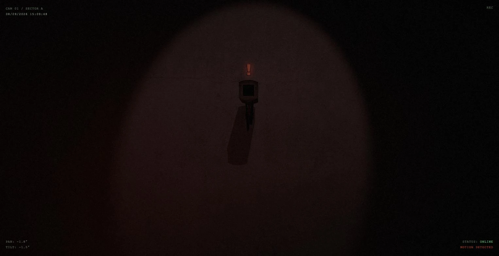
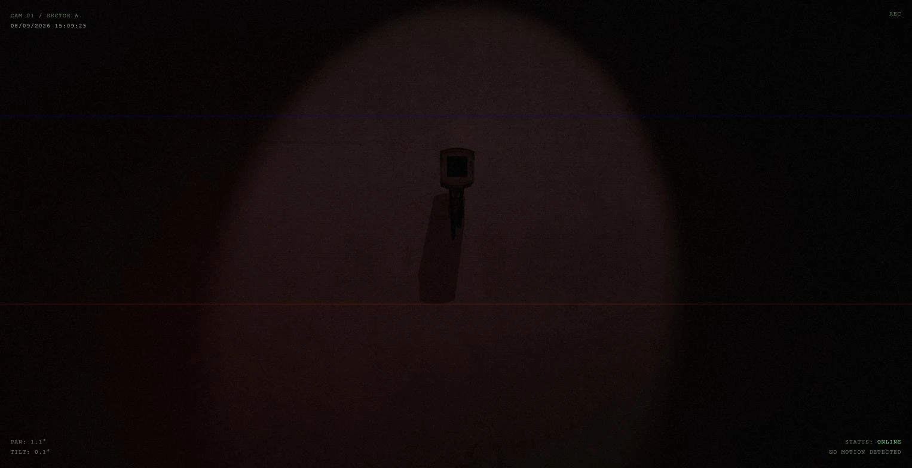

CCTV
Expérience 3D temps réel : une caméra de surveillance qui suit le curseur et reprend sa ronde à l’arrêt.

Objectif
Une démonstration courte de rendu 3D temps réel dans le navigateur, sans chargement perceptible et sans dépendance lourde.
Le sujet impose son propre traitement : une image de vidéosurveillance n’est pas un rendu propre. Elle a du grain, des lignes de balayage, un vignettage et de la dérive de couleur.
- Rendu
- Three.js, modèle GLB et textures PBR
- Comportement
- Suivi du curseur, ronde autonome
- Post-traitement
- Grain, balayage, aberration chromatique

Architecture
La tête suit le curseur en continu et bascule en ronde après un temps d’immobilité. À la détection d’un mouvement, un indicateur apparaît et le bandeau d’état passe au rouge.
Le post-traitement est peint en Canvas 2D par-dessus la scène, en dehors du rendu WebGL : réglable sans toucher aux nuanceurs, et sans coût pour la scène. Deux câbles sont générés à la volée et suivent le modèle.